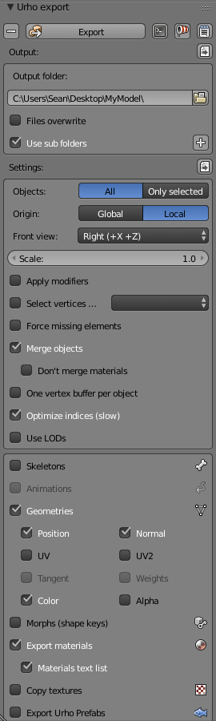
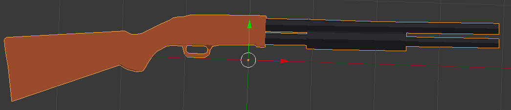
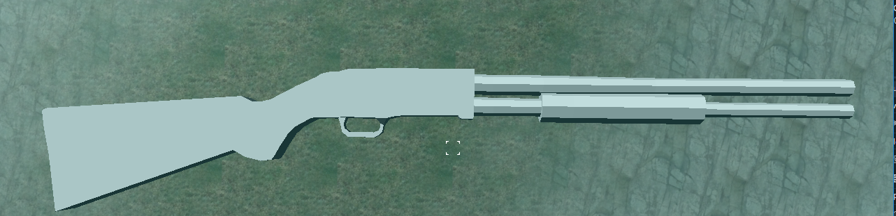

Sean221
I have create a model in Blender and it has two materials attached to it. Ive exported it using reattiva exporter.
The problem is that i cannot assign both of the materials to the object when i create it.

These are the settings im using

This is what its supposed to look like

This is what it looks like in game
Finally here is the code im using to create the model
StaticModel* gunObject = gunNode->CreateComponent<StaticModel>();
gunObject->SetModel(cache->GetResource<Model>("Models/Gun.mdl"));
gunObject->SetMaterial(cache->GetResource<Material>("Materials/Base.xml"));
gunObject->SetMaterial(cache->GetResource<Material>("Materials/BarrelStuff.xml"));